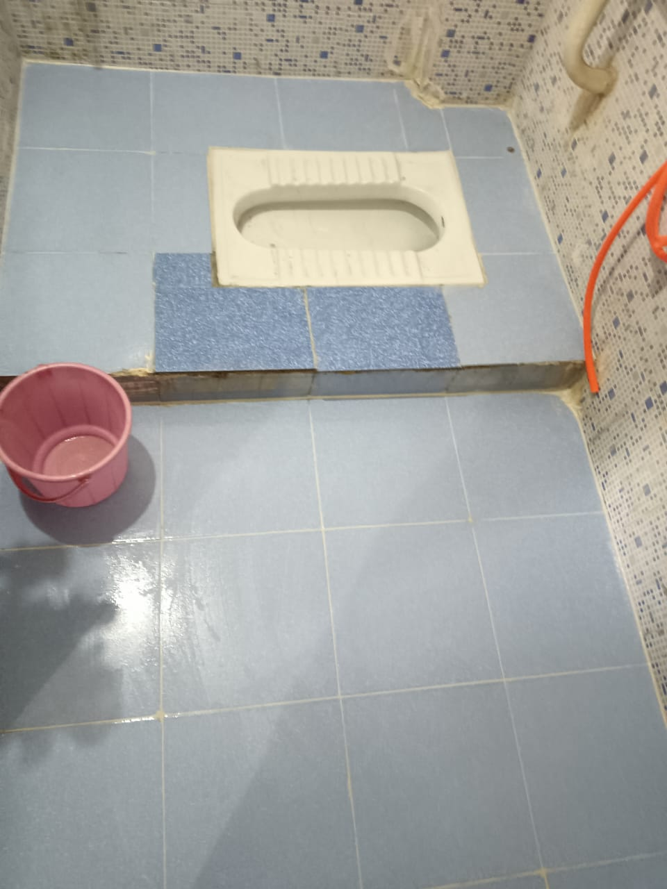
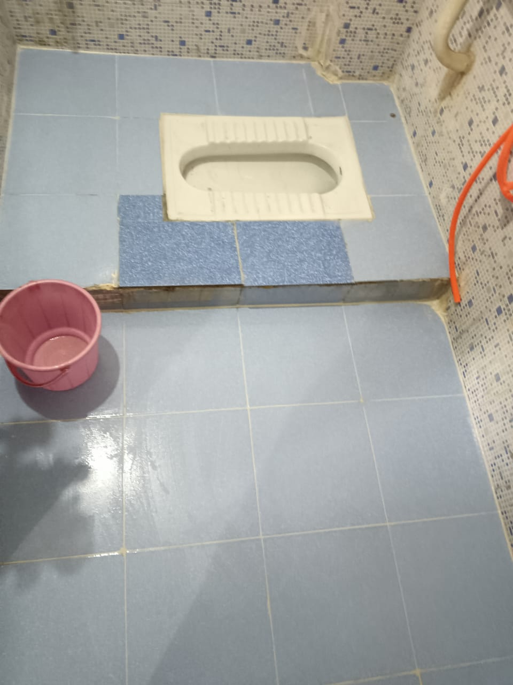
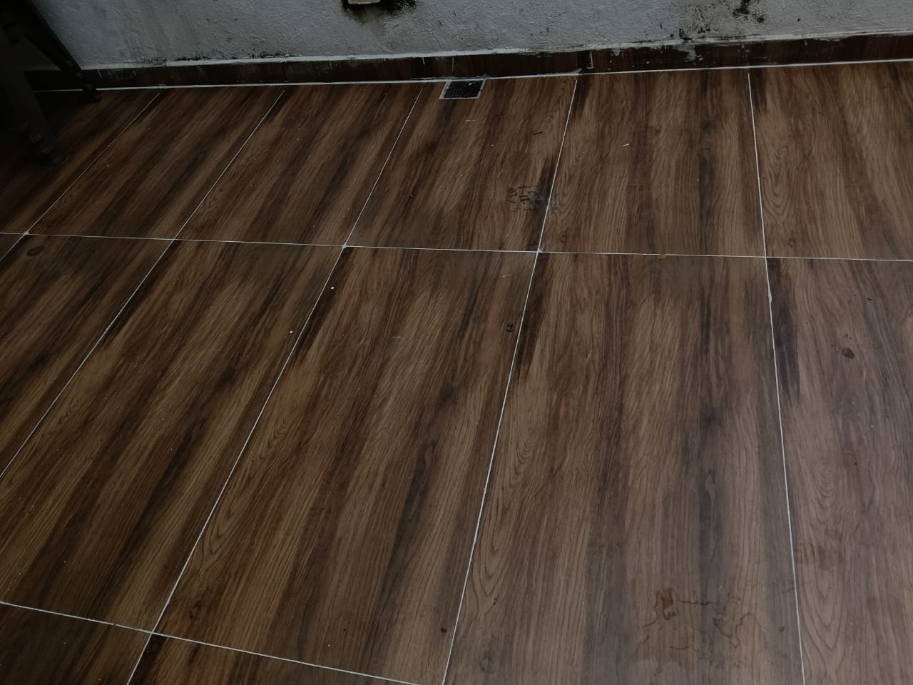
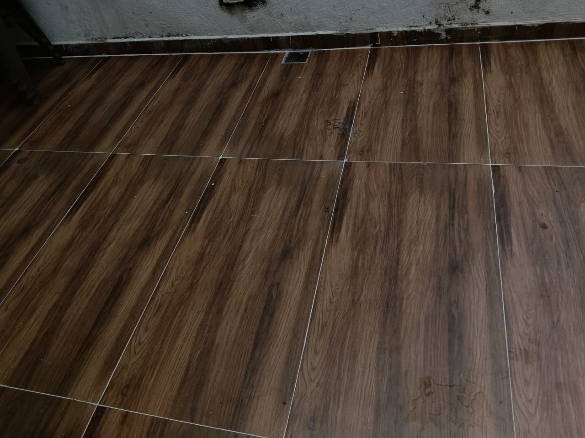

Injection Grouting & Tile Joint Treatment
Combined solution for hidden leakage and open tile joints.
Why Injection Grouting & Tile Joint Treatment Is Important
Hidden leakage often travels through tile joints. Combined treatment ensures complete waterproofing.
Materials Used
• PU injection grout
• Epoxy joint fillers
• Sealants
• Waterproof coatings
Our 5-Step Injection & Joint Treatment Process
Step 1: Leakage inspection.
Step 2: Injection grouting.
Step 3: Joint cleaning.
Step 4: Epoxy joint filling.
Step 5: Final sealing.
Project Image Gallery
 


 

Frequently Asked Questions
1. Tile breaking needed?
No.
No.
2. Stops hidden leakage?
Yes.
Yes.
3. Permanent?
Yes.
Yes.
4. Time?
2–3 days.
2–3 days.
5. Suitable for bathrooms?
Yes.
Yes.